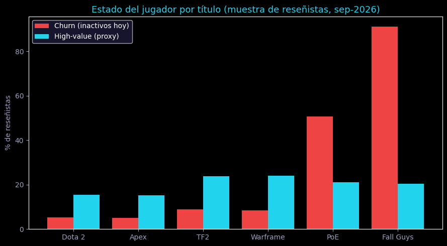
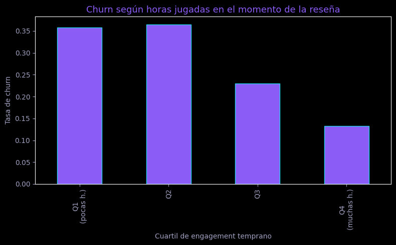
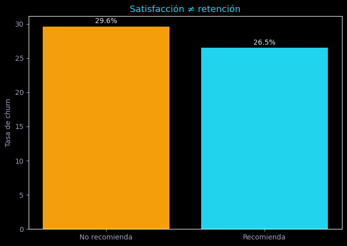

Inferimos qué jugadores están inactivos y quiénes son de alto valor solo con señales del momento de la reseña. Sin mirar la recencia. Modelos auditables, validez probada juego por juego.
| Jugador | Riesgo | Motivo | Acción |
|---|---|---|---|
| r88210 | 83% | Pocas horas tempranas | Onboarding + evento diario |
| r10422 | 71% | Señal antigua, título frío | Win-back + bundle retorno |
| r55201 | 44% | No recomienda | Soporte proactivo |
| r77340 | 9% | — | — |
27,1% de los reseñistas ya están inactivos. Y el engagement temprano lo anticipa: Q1 (≤18 h) 35,7% de churn frente a Q4 13,2%.
Mediana de horas en reseña: 36,8 h en churned vs 120,6 h en activos. Quien no se engancha en las primeras horas, no vuelve.
Churn entre quienes recomiendan: 26,5% vs 29,6% si no. La nota media no es el KPI; el hábito temprano sí.
Dota 2 genera 3.000 reseñas en 3 días; Fall Guys en 470. La velocidad de la comunidad delata la fase de vida del juego — y dónde poner Live-Ops.
18.099 reseñas públicas de Steam (API pública, sin key, 2026-09-14) → 16.447 jugadores etiquetados. Cobertura del 100% en campos clave. Procedencia completa en docs/08_datos_reales.md.
| Título | Reseñas | Churn* | Alto valor | p75 horas |
|---|---|---|---|---|
| Dota 2 | 2.920 | 5,2% | 15,4% | 1.153 h |
| Apex Legends | 2.977 | 5,1% | 15,3% | 423 h |
| Team Fortress 2 | 2.827 | 8,8% | 23,7% | 162 h |
| Warframe | 2.699 | 8,4% | 24,0% | 693 h |
| Path of Exile | 2.227 | 50,7% | 21,1% | 1.257 h |
| Fall Guys | 2.797 | 91,2% | 20,5% | 85 h |
* Tasas de la muestra de reseñistas, no retención de los juegos (documentado). Lo que generaliza son las relaciones, validadas juego por juego.
notebooks/02_eda_real.py)
Juegos vivos vs juegos en declive: dónde priorizar Live-Ops.

Q1 35,7% → Q4 13,2%: el hábito de las primeras horas decide.

Recomendar apenas mueve la aguja (26,5% vs 29,6%).
Infiere el estado de actividad sin mirar la recencia: solo señales del momento de la reseña. Ranking semanal para Live-Ops.
Validez por título ROC 0.891–0.924 en los 6 juegos. Matriz test: [[2258,140],[180,712]].
Probabilidad de jugador de alto valor (top-25% horas + recomienda; threshold 0.60). Para concentrar win-back y pukkar por calidad.
Validez por título ROC 0.979–0.996. Proxy transparente: los F2P no exponen pagos.
src/train_real.py.docs/08_datos_reales.md.models/real_*.pkl (con encoders), models/real_metrics.json, DB de 2 MB. El crudo se re-descarga en ~5 min.Ajusta el perfil y mira riesgo, motivo y acción. Demo ilustrativa calibrada con las importancias reales — no es el modelo productivo.
De tus installs, ~19,9% serán alto valor. Contactando al top por score (precisión 0,774) rindes 3,9× por euro de outreach.
Export diario de eventos anonimizado (CSV o endpoint): sesiones, progresión, compras, atribución. Firma DPA. Nada invasivo el día 1.
Tratado (Top-riesgo + acción del playbook) vs control. Métrica primaria: retención. Secundarias: 2ª sesión y conversión.
Informe con lift, IC 95% y €. Sin lift significativo, no se factura la fase 2. Precio piloto: 2.500 € fijos.
/score → {p_churn, motivo, acción}. Latencia < 200 ms p95..pkl con encoders. Re-entreno semanal.Foco: churn + alto valor para F2P. Cliente piloto: PlayNova Games.
APIs evaluadas (Steam ✓, OpenDota ✗ por timeouts). Schema real en la DB.
fetch_steam_reviews → build_real_dataset: 18.099 reseñas → 16.447 etiquetados.
02_eda_real.py: engagement temprano, fase por título, voto≠retención.
train_real.py anti-fuga + eval_per_title.py: ROC 0.89–0.92 por juego.
De la API pública de reseñas de Steam (sin key): 18.099 reseñas de 6 F2P del 2026-09-14. Crudo re-descargable, DB y resumen versionados, procedencia en docs/08_datos_reales.md.
No: es la tasa en nuestra muestra de reseñistas (quien escribe ya está implicado, y en un juego en declive casi todos están lapsed). Lo decimos por escrito. Lo que generaliza son las relaciones, validadas título a título.
Es señal real (velocidad de reseñas = fase de vida del título) pero con ventana desigual: documentado como limitación. El modelo nunca ve recencia ni horas totales; el piloto con ventanas fijas hará predicción pura.
Es un proxy transparente (top-25% horas + recomienda), así presentado en todas partes. En el piloto se sustituye por tus eventos de pago reales.
No: demo ilustrativa calibrada. El modelo real está en models/real_*.pkl; en el piloto exponemos /score de verdad.